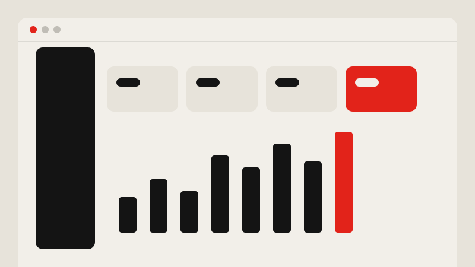
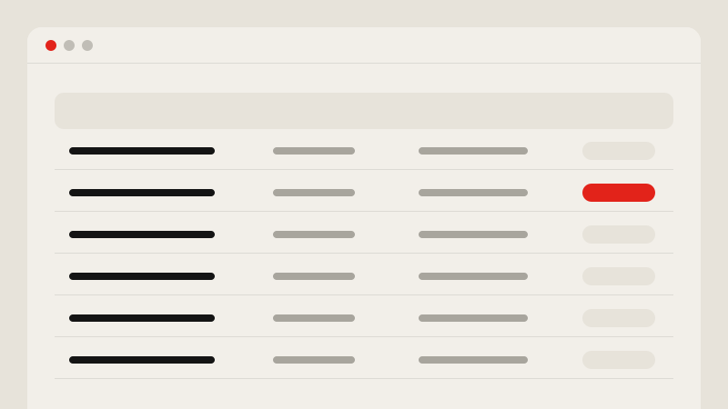
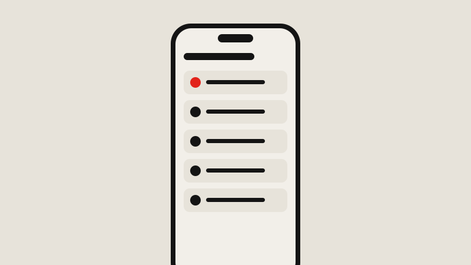

Libro Educação
Gestão escolar PluriConnect
Regras de gestão escolar traduzidas em jornadas que gestores e professores entendem de primeira.

Contexto
Redes de ensino têm rotinas cheias de regra: calendário, turmas, avaliação, acompanhamento de aprendizagem. Cada perfil que usa a plataforma enxerga essas regras de um jeito diferente e com níveis bem variados de familiaridade digital.
O desafio
Organizar um volume grande de regras de negócio em fluxos claros, sem esconder o que importa e sem obrigar ninguém a ler manual.
Processo
Discovery
Entrevistas qualitativas, surveys e análise de dados de uso para entender a rotina real de cada perfil.
Jornadas por perfil
Mapeei as jornadas de gestores e professores, marcando onde as regras de negócio geravam dúvida ou retrabalho.
Protótipos
Wireframes e protótipos de alta fidelidade no Figma, com narrativas claras para alinhar negócio, tecnologia e educação.
Testes e métricas
Testes de usabilidade antes do desenvolvimento e acompanhamento de métricas depois do lançamento.
Solução
Os fluxos foram redesenhados em torno das tarefas que cada perfil realmente faz no dia a dia. Informação densa ganhou hierarquia, filtros e estados claros, e as regras passaram a aparecer no momento em que fazem diferença.



Resultados
- Decisões de design fundamentadas em pesquisa e dados
- Fluxos mais claros para perfis com familiaridade digital variada
- Alinhamento mais rápido entre negócio, tecnologia e educação
Aprendizados
Em produto B2B educacional, quem compra nem sempre é quem usa. Ouvir gestores e professores separadamente mudou várias prioridades que pareciam óbvias no começo.